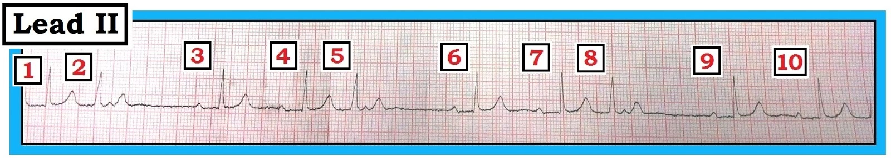
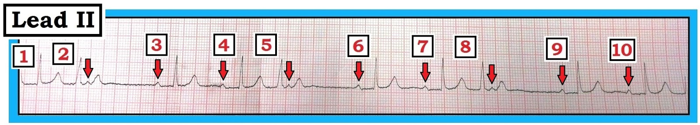
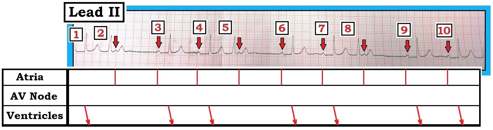
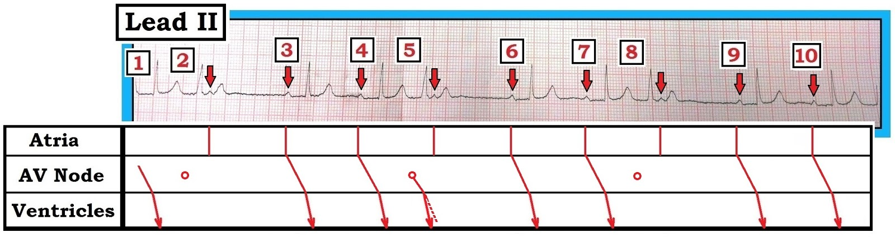
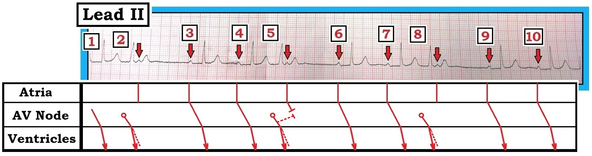
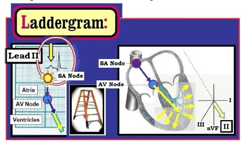

ECG Blog #69 (Giản đồ bậc thang – Nhịp theo nhóm)
Dải nhịp chuyển đạo II trình bày dưới đây trong Hình 1 được ghi từ một phụ nữ lớn tuổi có tiền sử suy tim.
- Nguyên nhân của nhịp theo nhóm (group beating) là gì?
- Nguyên nhân của các khoảng ngưng ngắn (giữa nhát #2-3; #5-6; và #8-9) là gì?
-----------------------------------------------
LƯU Ý #1: Chúng tôi thừa nhận lưới điện tâm đồ hơi bị méo do giấy ghi bị nghiêng. Bản ghi này được chụp bằng điện thoại thông minh. Dù chưa phải là công cụ sao chép tối ưu — việc dùng ảnh chụp bằng điện thoại thông minh giúp ích rất nhiều cho nỗ lực cùng nhau đọc điện tâm đồ và nhìn chung không ngăn cản việc đi tới chẩn đoán điện tâm đồ đúng.
LƯU Ý #2: Một trong những mục tiêu chính của tôi khi trình bày case này là minh họa Từng bước cách dựng một giản đồ bậc thang (laddergram). Case này là một ví dụ tuyệt vời về một cơ chế rối loạn nhịp phức tạp hơn so với vẻ ngoài ban đầu ... — nhưng lại được giải thích dễ dàng nhờ một giản đồ bậc thang.
-----------------------------------------------


Diễn giải Hình 1:
Rõ ràng có “nhịp theo nhóm” trên bản ghi này — tuy nhiên, nhịp này không phải là biểu hiện của Wenckebach. Chúng ta bắt đầu diễn giải bằng đánh giá theo “Cách tiếp cận Ps, Qs, 3R” — Chúng ta ghi nhận những điều sau:
- P – Sóng P — có mặt và đều (các mũi tên trong Hình 2).
- QRS – Độ rộng phức bộ QRS — hẹp. Do đó nhịp này là nhịp trên thất (phát sinh tại hoặc trên nút AV).
- Rate & Regularity (tần số và tính đều) — Theo Hình 2, nhịp nhĩ (P-P) đều (hoặc ít nhất cũng khá đều) với tần số ngay dưới 60 lần/phút. Tần số thất thay đổi (có nhịp theo nhóm (group beating)).
- Related? (có liên quan không?) — Có dẫn truyền xoang (dù với khoảng PR dài) ở 2 nhát đầu tiên của mỗi nhóm. Tức là các nhát #3,4; #6,7; và #9,10 có vẻ là nhát dẫn truyền từ xoang kèm blốc AV độ 1 (khoảng PR ~ 0.28 giây).


Dựng một GIẢN ĐỒ BẬC THANG:
Sự hiện diện của nhịp theo nhóm luôn phải gợi ý khả năng có một dạng rối loạn dẫn truyền kiểu Wenckebach nào đó. Dù vậy — blốc AV độ 2, Mobitz loại I (Wenckebach AV) không có mặt trong case này vì: i) khoảng PR không tăng dần trong mỗi nhóm; và, ii) cứ mỗi nhát thứ ba trên bản ghi này lại xuất hiện sớm (Lưu ý các nhát #2, 5 và 8 xuất hiện sớm).
- Điều đặc biệt bất thường — là không có sóng P nào đi trước các nhát sớm #2, 5 và #8, như lẽ ra phải thấy nếu đây là các PAC (ngoại tâm thu nhĩ – Premature Atrial Contractions). Thay vào đó — sóng P kế tiếp xuất hiện đúng thời điểm (các mũi tên trong Hình 2 thấy ngay sau các nhát #2, 5, và 8).
- Ngoài ra — Không có phức bộ QRS nào theo sau các sóng P nằm sau các nhát #2, 5, và 8. Chúng ta phải giải thích tại sao …
Các diễn biến trên dải nhịp thú vị này được giải thích tốt nhất bằng giản đồ bậc thang. Qua 7 Hình tiếp theo — Chúng tôi minh họa các bước mình dùng để dựng giản đồ bậc thang này. Phần lớn việc dựng hình mang tính trực giác. Khi làm xong — bạn sẽ thấy ngay giản đồ bậc thang hữu ích như thế nào trong việc giải thích các hiện tượng rối loạn nhịp vốn phức tạp mà không nhận ra ngay được nếu chỉ đánh giá dải nhịp.
-----------------------------------------------
LƯU Ý: Vẽ giản đồ bậc thang là một kỹ năng cần luyện tập đôi chút. Điều này có thể vượt quá mức quan tâm của nhiều người hành nghề. Chúng tôi nhấn mạnh những điều sau:
- Đại đa số rối loạn nhịp có thể được đọc mà không cần vẽ giản đồ bậc thang.
- Dù học vẽ giản đồ bậc thang quả thật đòi hỏi chút thời gian và luyện tập — học cách đọc giản đồ bậc thang đã được vẽ sẵn cho bạn thì DỄ. Bạn sẽ tiến xa trên con đường làm chủ lĩnh vực này chỉ trong 5 phút tới sau khi đọc xong ECG Blog này.
- GỢI Ý: Việc dùng compa đo (calipers) là thiết yếu. Dùng compa đo lập tức khiến bạn giỏi hơn! Đơn giản là không có cách nào tốt hơn để nhanh chóng xác định tính đều của sóng P và phức bộ QRS — và để xác định xem có tồn tại mối liên hệ giữa sóng P và phức bộ QRS hay không.
Căn bản về GIẢN ĐỒ BẬC THANG:
Giản đồ bậc thang đơn giản là đi theo đường đi của hoạt động điện qua hệ thống dẫn truyền. Nó được chia thành 3 tầng cơ bản: i) Tầng Nhĩ (nút xoang (SA) không được vẽ nhưng được ngầm hiểu nằm ở đỉnh tầng này); ii) Tầng Nút AV; và iii) Tầng Thất (Hình 3):
- Yếu tố thời gian đi theo chiều ngang — và tương ứng với thời gian trôi qua trên bản ghi điện tâm đồ.

------------------------------------------
Chúng tôi bắt đầu giản đồ bậc thang bằng cách vẽ vào những thành phần mà chúng ta BIẾT CHẮC là đúng. Thường gặp nhất — đó là hoạt động nhĩ:
- Dẫn truyền qua nhĩ diễn ra nhanh. Điều này được minh họa bằng một đường đỏ thẳng đứng vẽ ở tầng nhĩ tương ứng với thời điểm xuất hiện của mỗi sóng P (Hình 3).
- Dẫn truyền qua nút AV là chậm nhất. Điều này giải thích vì sao phần lớn khoảng PR là thời gian xung điện đi qua nút AV. MẤU CHỐT để học vẽ giản đồ bậc thang là để tầng Nút AV lại sau cùng!
- Vì vậy, bước tiếp theo chúng ta vẽ tầng thất. Chúng ta làm việc này bằng một đường hơi nghiêng — để thể hiện rằng dẫn truyền qua thất mất thời gian lâu hơn một chút so với qua nhĩ (Hình 4). Do bản chất chưa chắc chắn của các nhát sớm trên bản ghi này (các nhát #2,5,8) — Chúng tôi quyết định để các nhát này lại sau cùng. Lưu ý trong Hình 4 rằng mỗi đường nghiêng ở tầng thất tương ứng với một phức bộ dẫn truyền từ xoang.


------------------------------------------
Tiếp tục với những gì chúng ta BIẾT CHẮC là đúng — Giờ chúng ta vẽ tầng nút AV cho các nhát dẫn truyền từ xoang từ Hình 4. Chúng ta làm vậy bằng cách nối đường thẳng đứng ở đáy tầng nhĩ của các nhát #3,4; 6,7; và 9,10 — với điểm ở đỉnh tầng thất của từng nhát này, nơi dẫn truyền trong thất bắt đầu (Hình 5).

------------------------------------------
Giờ là lúc "giải" giản đồ bậc thang. Chúng ta làm điều này bằng cách điền vào tầng nút AV cho những nhát mà chúng ta còn chưa chắc chắn.
- Cần nhấn mạnh rằng tới thời điểm này chúng ta không nhất thiết chắc chắn về cơ chế của rối loạn nhịp (Nếu đã chắc, chúng ta đã không phải vẽ giản đồ bậc thang này).
- Thay vào đó — Chúng ta đang tìm một giả thuyết hợp lý để giải thích những thành phần khó hiểu của dải nhịp. Trong case này — việc đó bao gồm giải thích: i) TẠI SAO các nhát #2,5,8 xuất hiện sớm; ii) BẰNG CÁCH NÀO các sóng P ngay sau các nhát này vẫn có thể xuất hiện đúng thời điểm; và iii) TẠI SAO không thấy phức bộ QRS nào sau các sóng P không được dẫn truyền này.
-----------------------------------------------
LƯU Ý: Nếu bạn vẽ giản đồ bậc thang trên giấy — tốt nhất ban đầu nên dùng bút chì thay vì bút mực (giống như khi bạn giải một ô sudoku) — vì có thể bạn sẽ cần tẩy đi và thử nhiều hơn một giả thuyết cho tới khi đi đến một lời giải thích hợp lý cho các diễn biến rối loạn nhịp.
- Tôi thích dùng Power Point để dựng giản đồ bậc thang — vì dễ nhân bản các thành phần — và dễ đo chính xác các thành phần của giản đồ bậc thang.
-----------------------------------------------
Chúng tôi cho rằng các nhát xuất hiện sớm #2,5,8 hẳn là PJC (ngoại tâm thu bộ nối – Premature Junctional Contractions). Các nhát này đến sớm — chúng là nhịp trên thất (QRS hẹp) — và không có sóng P sớm đi trước.
- PJC phát sinh từ tầng nút AV. Chúng ta biểu thị PJC bằng một vòng tròn rỗng trong tầng nút AV, bắt đầu hơi trước QRS của PJC (Hình 6).
- Lưu ý trên dải nhịp rằng mỗi nhát sớm trông hơi khác so với các nhát dẫn truyền từ xoang (PJC không cao bằng và hơi rộng hơn). Như vậy, PJC được dẫn truyền với một mức độ lệch hướng nào đó. Chúng ta biểu thị điều này trên giản đồ bậc thang bằng cách thêm một đường chấm chấm vào đường dẫn truyền ở tầng thất (Xem nhát #5 ở tầng thất của Hình 6).


------------------------------------------
Trong Hình 7 — chúng tôi hoàn tất việc minh họa dẫn truyền lệch hướng cho từng PJC (các nhát #2,5,8) trên giản đồ bậc thang.
- Chúng ta BIẾT CHẮC rằng các sóng P đúng thời điểm xuất hiện sau mỗi PJC không được dẫn truyền.
- Chúng tôi minh họa sự không dẫn truyền này trong Hình 7 chỉ cho sóng P ngay sau nhát #5 (thêm một “đầu chặn” (butt) ở tầng nút AV cho sóng P sau nhát #5).

------------------------------------------
Giờ chúng ta cần giải quyết TẠI SAO sóng P sau mỗi PJC không được dẫn truyền. Chúng ta làm điều này bằng cách viện dẫn khái niệm dẫn truyền ẩn (concealed conduction) — nghĩa là hẳn phải có những diễn biến không nhìn thấy được trên điện tâm đồ bề mặt đang xảy ra, làm thay đổi về mặt sinh lý các kiểu dẫn truyền được dự đoán.
- Hình 8 minh họa giả thuyết của chúng tôi. PJC ở nhát #5 dẫn truyền ngược dòng (đường chấm chấm trong tầng nút AV) cũng như xuôi dòng. Khi làm vậy — nó khiến mô phía trên nó tạm thời rơi vào thời kỳ trơ. Điều này ngăn cản dẫn truyền của xung xoang kế tiếp.


------------------------------------------
Hình 9 hoàn tất bài tập này — khi chúng ta vẽ dẫn truyền ngược dòng cho mỗi PJC, điều giải thích sự không dẫn truyền của mỗi xung xoang đúng thời điểm tiếp theo.

------------------------------------------
ĐIỀU CỐT LÕI: — Đây là một rối loạn nhịp phức tạp. Lý do tôi giả định rằng các nhát #2, 5 và 8 là PJC (chứ không phải PAC) — là vì các nhát này không có sóng P sớm đi trước — và sóng P xoang kế tiếp đến đúng thời điểm (trong khi nếu các nhát này là PAC, sóng P xoang kế tiếp sẽ bị trễ). Nhưng chẳng phải giờ đây, khi nhìn vào giản đồ bậc thang ở Hình 9, đã rõ ràng là chúng ta có thể ngay lập tức biết điều mà tôi tin là đang xảy ra (và vì sao các sóng P đúng thời điểm theo sau các nhát #2,5,8 không được dẫn truyền)?
------------------------------------------
================================
- Chúng tôi xin CẢM ƠN Yong Chuan Chee (đến từ Penang, Malaysia) đã cho phép chúng tôi sử dụng ca lâm sàng và bản ghi của anh.
================================
- ECG Blog #188 của tôi — hoàn toàn dành cho Giản đồ bậc thang (bao gồm một Video Pearl về điện tâm đồ minh họa chủ đề này + nhiều liên kết tới các bài blog khác có ví dụ giản đồ bậc thang).

